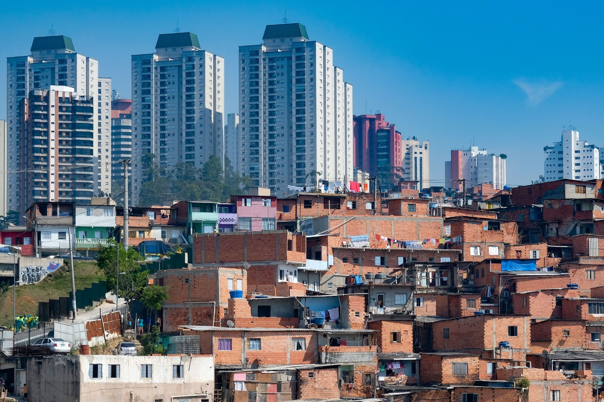
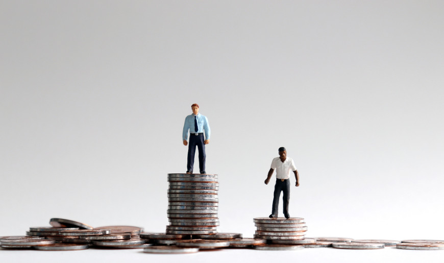

Desafios à desigualdade socioeconômica persistente no Brasil
A história se repete
ㅤㅤO livro "A hora da Estrela", de Clarice Lispector, relata as desigualdades sociais de migrantes nordestinos
em busca de oportunidades. Análoga à obra, a realidade socioeconômica desigual entre regiões brasileiras
mantém o domínio da elite sustentado no legado de exploração e concentração de renda. Esse desequilíbrio de
estados brasileiros agrava-se pela negligência ao Nordeste advém do descaso histórico de Governos a prestigiar o
Sul e Sudeste. Este fato mantém a exploração de trabalhadores, e potencializa a ausência de muitos jovens à
educação positiva.
ㅤㅤDiante da negligência governamental e da degradação socioeconômica, a disparidade social no Brasil
reflete a falta de compromisso da gestão pública, ao prejudicar inúmeros cidadãos. O governo, que direciona
avanços financeiros para o sul e sudeste, intensifica a desigualdade econômica. Uma pesquisa feita pela FECOP(
Fundo Estadual de Combate à Pobreza, 2020), revelou uma correlação negativa entre governança e
infraestrutura, evidenciando-se um limite desigual dos serviços básicos no Nordeste.
ㅤㅤNessa síntese, o crescimento de subempregos e a substituição de seres
Nesse cenário de entraves, a exploração trabalhista amplia a disputa entre classes, ao promover a
intensa força de trabalho em busca do acúmulo e estabilização capital. Segundo o Ministério do Trabalho e
Emprego (TEM), o Brasil encontrou 2.575 pessoas em situação análoga à escravidão em 2022. Tais assimetrias
perpetuam um ciclo de pobreza e exclusão social, ao favorecer a desigualdade socioeconômica e colocar o
extremo esforço do indivíduo numa posição inadequada.
ㅤㅤA desigualdade socioeconômica no Brasil, ao potencializar a ausência de muitos jovens à educação
positiva, cria um cenário desafiador. A negligência governamental em áreas menos favorecidas resulta em
condições precárias nas escolas, dessa maneira a governança limita o acesso a recursos educacionais de
qualidade. Jovens nessas regiões enfrentam barreiras socioeconômicas que dificultam sua permanência e
sucesso no sistema educacional, contribuindo para a desmotivação e perpetuação ao ciclo de desigualdade.
ㅤㅤ Diante do exposto, cabe ao governo agir para garantir a equidade entre os indivíduos e contribuir para
uma distribuição de renda mais justa. É fundamental que o Poder Legislativo reconheça de maneira integral a
importância de combater a exploração trabalhista. Além disso, é crucial que a governança se comprometa em
promover uma educação de qualidade, dispondo-se formar profissionais capacitados e contribuir para um futuro
mais promissor para toda a sociedade.
Autores da redação: Eduardo Guimarães de S. Rodrigues, Hubert Fernando de C. Muniz e Emilly Victória A. dos
Santos.

